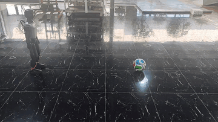
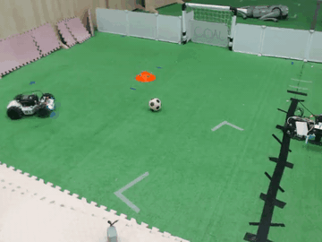
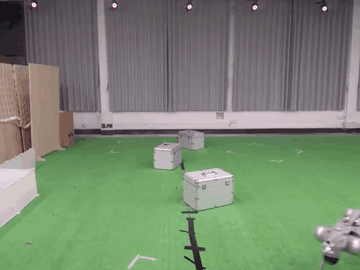
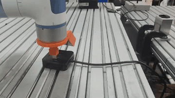
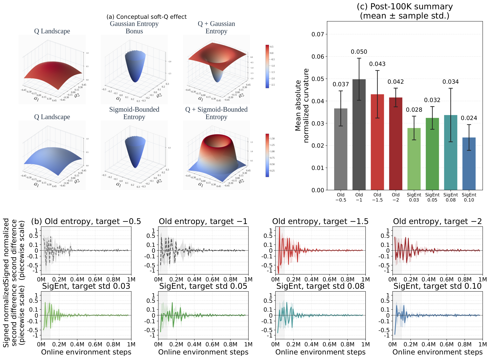

A
Sigmoid-bounded entropy
Transforms per-dimension surprisal into a smooth bounded score, so the entropy contribution remains positive and controlled.
OFFLINE-TO-ONLINE REINFORCEMENT LEARNING
SCQ makes low-cost online learning on deployed robots practical for training end-to-end visual agents.
Starting from limited demonstrations, it stabilizes online policy improvement under visual distribution shift—without human-in-the-loop correction.

Humanoid kicking
Ball-to-goal
Quadruped navigation
Precision arm alignmentTHE CENTRAL IDEA
Standard entropy terms can become negative. During online fine-tuning with limited replay support, that can amplify policy-mean oscillations and pull improvement toward out-of-distribution actions.
A
Transforms per-dimension surprisal into a smooth bounded score, so the entropy contribution remains positive and controlled.
B
Retains conservative value regularization and return-based calibration to reduce overestimation under dataset shift.
C
Targets a reliable learning signal when policies transition from demonstrations to online robot interaction.
FIG. 01 · MECHANISM AND TRAINING DIAGNOSTIC

(a) Conceptual soft-Q effect. With a Gaussian policy of σπ = 0.1 and actions sampled within 1.5σπ of the mean, the default entropy term can lower Q̂ near the policy action and shift max-Q improvement toward OOD actions; SigEnt stays positive and bounded, producing a clearer high-Q region. (b) Door Human one-shot diagnostic. Each curve is a five-seed mean of the signed, normalized second difference of the logged policy-mean Q-gradient over 1M online steps, across four old-entropy targets (−0.5, −1, −1.5, −2) and four SigEnt target standard deviations (0.03, 0.05, 0.08, 0.10). (c) Post-100K summary. Mean absolute normalized curvature after the initial transient, mean ± sample standard deviation across the same five seeds — SigEnt settles to a visibly calmer signal than every old-entropy target shown.
PROTOCOL ADVANTAGE
SCQ is designed for a stricter deployment contract: start with one successful demonstration, learn online from robot interaction, and operate without corrective human intervention.
| Deployment requirement | SCQthis work | RL-100real-world manipulation | HIL-SERLhuman-in-the-loop RL |
|---|---|---|---|
| One successful demonstration initializes learningMinimal offline data before deployment | Yesone-shot protocol | Not the reported setting | Not the reported setting |
| Human corrective intervention required onlineOperator action correction during training | Noautonomous after initialization | Noiterative self-improvement | Yeshuman-in-the-loop |
| End-to-end visual policy updated on the robotOnline policy improvement from visual observations | Yes | Yes | Yes |
| Cross-embodiment task coverageManipulation, wheeled, quadruped, and humanoid systems | Yesfour embodiment families | Manipulation focus | Manipulation focus |
| Fixed-anchor training with deployment generalizationChanged target position and angle at evaluation | Yescross-position & cross-angle | Not the reported setting | Not the reported setting |
Protocol-level comparison based on the central settings reported for each method; it is not a matched performance ranking. RL-100 refers to RL-100: Performant Robotic Manipulation with Real-World Reinforcement Learning; HIL-SERL refers to Precise and Dexterous Robotic Manipulation via Human-in-the-Loop Reinforcement Learning.
REAL-WORLD ROBOT LEARNING
SCQ is designed around a practical deployment setting: a robot begins with a single successful demonstration, learns from its own online interaction, and executes without human-in-the-loop correction.
ONE LEARNING FRAMEWORK, MULTIPLE EMBODIMENTS
Start from one successful demonstration rather than a large, task-specific data collection campaign.
Improve the policy directly from new robot interaction after the initial demonstration.
Run the learning and deployment loop without human-in-the-loop action correction or teleoperation.
Target robustness to changes in object position and environmental lighting from a fixed camera view.
TASK 01 · 01 CLIP
Visual arm alignment for a fine-grained contact and positioning task.
HIGH-PRECISION ALIGNMENT · SUMMARY
| Metric | Result |
|---|---|
| Online training time | 30 min |
| First 100% success | 8,000 interaction steps |
| Positioning precision | <0.2 mm |
| Angular precision | <1° |
GENERALIZATION PROTOCOL
Tests cross-position and cross-angle generalization rather than memorization of the training pose.
TASK 02 · 08 CLIPS
Ball-to-goal behavior combines navigation, object interaction, and variable spatial task layouts.
TASK 03 · 06 CLIPS
Visual locomotion through physical environments with changed obstacle layouts and paths.
TASK 04 · 06 CLIPS
Dynamic whole-body control with locomotion, target approach, and contact-rich kicking behavior.
RESOURCES
CITATION
Citation metadata will be updated with the final publication venue when available.
@article{scq,
title = {SCQ: Stabilizing Conservative Q-Learning with Sigmoid-Bounded Entropy},
author = {Wu, Xiefeng and Zhang, Shu and Chu, Zhaojie and Hu, Mingyu},
year = {2026}
}